Guia do Orion em Hero Wars: Dominion Era: Dano das Skills, Build e Counters
- Por: Alexandre Domingos. .
Orion vence lutas ao inundar o campo com explosões mágicas rápidas antes que o inimigo consiga estabilizar. Se você gosta de magos de retaguarda que snowballam pelo ritmo da luta, este guia é para você.
Aqui você encontra o dano real das skills do Orion, prioridades de evolução, stats coloridos, melhores glifos, artefatos, patronagem, war flags, counters e ideias de times para o meta atual.
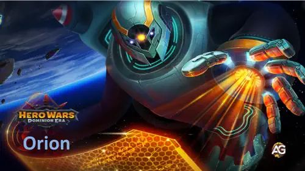
Quem é Orion em Hero Wars: Dominion Era
Orion é um mago puro de retaguarda focado em dano mágico explosivo, conjurações repetidas e pressão antes que o adversário monte o próprio jogo. Ele não precisa ir para a linha de frente para controlar a batalha, porque o motor de energia e os mísseis dele fazem isso por conta própria.
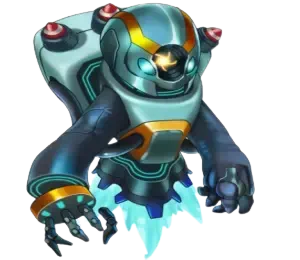
- Papel Principal: Mago
- Papel Adicional: Dano Explosivo / Controle
- Atributo Principal: Inteligência
- Posição: Luta na Retaguarda (Posição 47)
- Patronagem: Merlin, Axel, Khorus, Mara, Biscuit
Orion - Estatísticas Máximas em Hero Wars Dominion Era
| Atributo | Valor | Atributo | Valor |
|---|---|---|---|
| Inteligência |  17,625 17,625 |
Agilidade |  2,885 2,885 |
| Força |  3,020 3,020 |
Vida |  504,563 504,563 |
| Ataque Físico |  23,445 23,445 |
Ataque Mágico |  123,552 123,552 |
| Armadura |  25,113 25,113 |
Defesa Mágica |  48,866 48,866 |
| Precisão |  17,625 17,625 |
Resistência Crítica |  17,625 17,625 |
| Penetração Mágica |  51,671 51,671 |
Poder |  194,829 194,829 |
Prós e Contras do Orion - Hero Wars Web e Facebook
Prós
- Excelente mago explosivo com conjurações repetidas por causa da passiva de energia.
- Sinergia muito forte com heróis e pets que aumentam dano mágico, lentidão ou sobrevivência.
- Consegue pressionar bem tanto no PvP quanto no PvE porque o dano começa cedo e escala muito bem.
- O artefato de arma melhora o dano mágico da equipe toda, não apenas o dele.
Contras
- A sobrevivência na retaguarda é apenas mediana, então ele pode cair rápido para burst ou counters anti-mago.
- Rende muito mais com suporte do que sozinho, principalmente contra inimigos resistentes à magia.
- O controle é útil, mas não é totalmente confiável contra inimigos acima do limite de nível.
- Se as primeiras conjurações atrasam, a equipe pode perder o ritmo que faz Orion ser tão perigoso.
Prioridade para Evoluir as Skills do Orion - Hero Wars: Dominion Era
O Orion deve priorizar primeiro as skills que fazem ele conjurar mais rápido e explodir mais forte, e depois investir nas ferramentas de controle que ficam ainda melhores quando as ascensões são desbloqueadas.
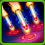
1 - Destruição Total
Destruição Total é a ultimate de burst do Orion. Ele dispara 6 foguetes contra os inimigos com mais vida, e cada foguete causa 62,098 de dano mágico. Em termos simples, Orion mira nos alvos mais saudáveis para quebrar o núcleo inimigo rapidamente em vez de desperdiçar burst em heróis quase mortos.
Fórmula - Dano Mágico: 62,098 (45% Ataque Mágico + 50 x Nível)
Ascensão V - Destruição Tática: Quando um inimigo está atordoado ou lento, ele recebe uma marca. Quando Orion usa esta skill, ele lança um foguete extra em cada alvo marcado, e cada foguete extra causa 41,866 de dano mágico. Como a Ascensão V demora a chegar, a skill base já vale o investimento, e a ascensão apenas aumenta ainda mais o teto dela.
Fórmula - Dano Bônus da Ascensão: 41,866 (30% Ataque Mágico + 4,800)
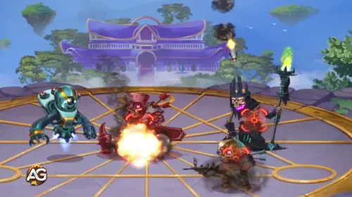
Prioridade de Evolução: Alta – Este é o principal botão de burst do Orion, então evoluí-lo mantém a pressão de abate relevante do começo ao fim. Quando a ascensão chegar, a skill cresce ainda mais sem você precisar mudar a base da build.
Informações da Skill
- Palavras-chave: dano mágico, burst, alvos marcados
- Área: inimigos com mais vida
- Acertos: 6 foguetes, mais foguetes extras da ascensão em alvos marcados
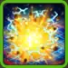
2 - Campo Magnético
Campo Magnético explode na retaguarda inimiga, causa 50,721 de dano mágico em área e deixa os alvos lentos por 4 segundos. Em termos fáceis, esta é a skill que ajuda Orion a tocar os heróis escondidos atrás do tanque e ainda preparar alvos para a ultimate com ascensão.
Fórmula - Dano Mágico: 50,721 (40% Ataque Mágico + 10 x Nível)
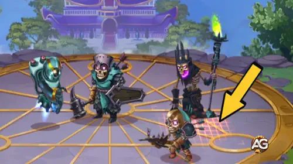
Prioridade de Evolução: Média – A lentidão e o alcance na retaguarda são úteis, mas Orion ainda consegue cumprir a principal função sem maximizar esta skill primeiro. Evolua depois das skills que definem diretamente o ritmo do burst dele.
Informações da Skill
- Recarga: 14.5 segundos
- Palavras-chave: dano mágico, lentidão, pressão na retaguarda
- Duração: 4 segundos
- Área: área da retaguarda inimiga
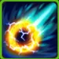
3 - Explosão de Antimatéria
Explosão de Antimatéria dispara um míssil no inimigo mais próximo, causa 106,642 de dano mágico e o atordoa por 4 segundos. Explicando de forma simples: este é o disparo de controle do Orion. Ele trava a ameaça mais próxima enquanto ainda causa um dano pesado.
Fórmula - Dano Mágico: 106,642 (80% Ataque Mágico + 60 x Nível)
Ascensão II - Corrente de Antimatéria: Depois do primeiro impacto, o projétil salta para os 2 inimigos mais próximos. Cada salto causa 53,321 de dano mágico e atordoa por 1 segundo. Como a Ascensão II chega antes da Ascensão V, este é um bônus futuro bem relevante, mas o motivo principal para evoluir a skill continua sendo o controle e o dano base.
Fórmula - Dano do Salto da Ascensão: 53,321 (40% Ataque Mágico + 3,900)
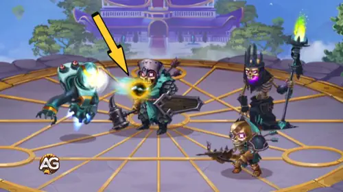
Prioridade de Evolução: Média Alta – Esta skill entrega controle forte e um hit muito pesado, então merece investimento relevante. Ela fica abaixo das prioridades máximas porque o motor de energia e a ultimate normalmente decidem mais partidas primeiro.
Informações da Skill
- Recarga Inicial: 5 segundos
- Recarga: 20 segundos
- Palavras-chave: dano mágico, atordoamento, projétil em cadeia
- Duração: 4 segundos de stun base, 1 segundo de stun nos saltos da ascensão
- Alcance: inimigo mais próximo
- Acertos: 1 acerto base, mais 2 saltos da ascensão
4 - Carga Completa
Carga Completa é a passiva que faz Orion parecer tão rápido. Cada ataque dá 550 de energia extra, então ele alcança Destruição Total muito antes e volta para a ultimate mais vezes que muitos outros magos. Se você já se perguntou por que Orion parece conjurar sem parar, esta é a resposta.
Fórmula - Energia Extra: 550 (5 x Nível - 100)
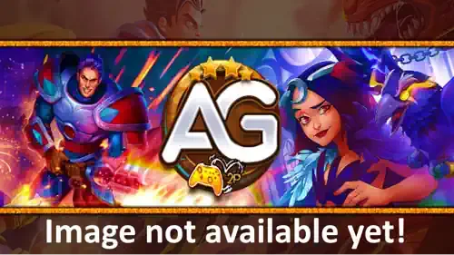
Prioridade de Evolução: Muito Alta – Para iniciantes, este é o upgrade que mais muda Orion porque mais energia significa mais ultimates, mais ativações do artefato de arma e mais pressão total. Vale subir o quanto antes.
Informações da Skill
- Palavras-chave: passiva, ganho de energia, aceleração de ritmo
Melhor Skin do Orion em Hero Wars: Dominion Era
As skins do Orion devem priorizar primeiro os atributos que aumentam diretamente o dano mágico das skills e depois a sobrevivência necessária para ele continuar conjurando em lutas perigosas do PvP.
Skin Padrão
Ganho de atributos: Inteligência +1,365
- - Ataque Mágico pela Inteligência: +4,095
- - Defesa Mágica pela Inteligência: +1,365
- - Ataque Físico pela Inteligência: +1,365
Prioridade de Evolução: Alta – A Skin Padrão é um investimento inicial muito confiável porque Inteligência melhora vários atributos úteis ao mesmo tempo. Ela dá mais dano e ainda deixa Orion menos frágil contra magos inimigos.
Total de Skin Stones de Inteligência para o nível máximo:
 30,825
30,825
Skin Mecânica
Ganho de atributos: Ataque Mágico +10,650
Prioridade de Evolução: Muito Alta – Esta é a melhor skin do Orion para evoluir primeiro porque todas as principais skills dele escalam com Ataque Mágico. Ela aumenta o dano de Destruição Total, Campo Magnético e Explosão de Antimatéria imediatamente.
Total de Skin Stones de Inteligência para o nível máximo:
 55,410
55,410
Skin Cibernética
Ganho de atributos: Defesa Mágica +10,650
Prioridade de Evolução: Baixa – Defesa Mágica ajuda apenas em matchups específicos contra magos. Ela não aumenta a pressão do Orion, então normalmente fica atrás das skins ofensivas e das defensivas mais universais.
Total de Skin Stones de Inteligência para o nível máximo:
 55,410
55,410
Skin Romântica
Ganho de atributos: Armadura +10,650
Prioridade de Evolução: Média – Armadura importa contra assassinos físicos e equipes de burst rápido, especialmente porque Orion fica na retaguarda e pode ser pego por salto ou dano em área. É útil, mas ainda secundária em relação às skins de dano.
Total de Skin Stones de Inteligência para o nível máximo:
 55,410
55,410
Skin de Inverno
Ganho de atributos: Penetração Mágica +10,650
Prioridade de Evolução: Alta – A Skin de Inverno é uma das melhores skins de late game para Orion porque ajuda as skills dele a atravessarem Defesa Mágica. Ela fica ainda mais valiosa em lutas do meta contra equipes resistentes.
Total de Skin Stones de Inteligência para o nível máximo:
 55,410
55,410
Skin Lunar
Ganho de atributos: Vida +106,645
Prioridade de Evolução: Média Alta – Vida dá ao Orion mais margem para sobreviver a dano em área, anti-magos e lutas mais lentas. Não é tão explosiva quanto uma skin ofensiva, mas costuma ser a melhor defesa bruta depois que o dano principal já está pronto.
Total de Skin Stones de Inteligência para o nível máximo:
 55,410
55,410
Prioridade de Evolução dos Glifos do Orion
Os glifos do Orion devem primeiro aumentar o dano das magias e depois garantir resistência suficiente para ele continuar vivo no fundo do campo em partidas reais.
1º Glifo - Ataque Mágico
Ganho de atributos: Ataque Mágico +6,500
Prioridade de Evolução: Muito Alta – Este é o melhor glifo porque todas as skills importantes do Orion escalam com Ataque Mágico. Se você quer o maior aumento direto de dano, comece aqui.
2º Glifo - Vida
Ganho de atributos: Vida +62,200
Prioridade de Evolução: Média Alta – Vida é uma das defesas mais práticas do Orion porque ajuda tanto contra burst físico quanto mágico. Em geral, ela entrega mais sobrevivência real do que defesas muito específicas.
3º Glifo - Penetração Mágica
Ganho de atributos: Penetração Mágica +6,500
Prioridade de Evolução: Alta – Este glifo é um grande upgrade ofensivo sempre que o inimigo empilha Defesa Mágica. Ele fica um pouco atrás do Ataque Mágico porque Orion ainda quer o escalonamento bruto primeiro.
4º Glifo - Defesa Mágica
Ganho de atributos: Defesa Mágica +6,500
Prioridade de Evolução: Baixa – Defesa Mágica é útil apenas em alguns confrontos. Ajuda, mas normalmente entrega menos valor do que os glifos ofensivos e menos segurança universal do que Vida.
5º Glifo - Inteligência
Ganho de atributos: Inteligência +1,135
- - Ataque Mágico pela Inteligência: +3,405
- - Defesa Mágica pela Inteligência: +1,135
- - Ataque Físico pela Inteligência: +1,135
Prioridade de Evolução: Alta – Inteligência dá crescimento equilibrado em dano e defesa. Mesmo aparecendo por último na ordem visual, o valor real dela é forte o bastante para muitos jogadores investirem antes de terminar glifos puramente defensivos.
Prioridade de Evolução dos Artefatos do Orion em Hero Wars: Dominion Era
A ordem dos artefatos do Orion deve priorizar primeiro o escalonamento permanente dele mesmo e depois o burst mágico em equipe que transforma a ultimate em uma condição ainda melhor de vitória.
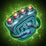
Artefato DD-901 Arsenal
Ganho de atributos: Penetração Mágica +50,190
Prioridade de Evolução: Alta – Orion ativa esta arma junto com a ultimate, dando à equipe uma janela muito forte de Penetração Mágica por 9 segundos. É excelente em times mágicos, mas ainda fica atrás do livro porque o livro melhora Orion durante toda a luta.
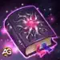
Artefato Manuscript of the Void
Ganho de atributos: Ataque Mágico +8,364
Penetração Mágica +16,731
Prioridade de Evolução: Muito Alta – Este é o melhor artefato do Orion para evoluir primeiro porque melhora o dano dele o tempo todo. Mais Ataque Mágico e Penetração Mágica impactam diretamente todas as skills importantes do kit.
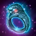
Artefato Ring of Intelligence
Ganho de atributos: Inteligência +6,249
- - Ataque Mágico pela Inteligência: +18,747
- - Defesa Mágica pela Inteligência: +6,249
- - Ataque Físico pela Inteligência: +6,249
Prioridade de Evolução: Média – O anel continua sendo útil porque Inteligência escala vários atributos do Orion ao mesmo tempo, mas ele não muda lutas com a mesma clareza que o livro e não apoia a equipe inteira como a arma.
Melhor Patronagem para Orion
Orion quer pets que aumentem diretamente o dano mágico ou garantam que ele sobreviva tempo suficiente para repetir as ultimates que definem as melhores partidas dele.
1º Lugar:

Merlin é a melhor patronagem do Orion porque oferece Ataque Mágico, Penetração Mágica e Tempus Magica. Essa combinação melhora os principais números de dano e ainda acelera as skills mágicas que mais importam no kit dele.
2º Lugar:

Axel é a opção defensiva mais segura. Orion é um mago frágil de retaguarda, e o limite de dano do Axel evita mortes repentinas por burst, além de manter um suporte útil de Ataque Mágico e Armadura.
3º Lugar:

Khorus brilha em lineups carregadas de magia. Orion causa dano mágico repetido, então Khorus consegue converter parte disso em escudo e ajudar times de Inteligência a sobreviverem até vencer lutas longas.
4º Lugar:

Mara é mais especializada. Ela aumenta a duração dos controles, então ajuda a Explosão de Antimatéria do Orion a incomodar mais, mas faz menos pelo dano bruto dele do que Merlin e menos pela sobrevivência do que Axel.
5º Lugar:

Biscuit é a escolha situacional de anti-cura. Ele pode ser útil contra times de sustain, mas não melhora o padrão central de burst do Orion tanto quanto os patronos acima.
Como Counterar Orion em Hero Wars Dominion Era
Cornelius
Cornelius derrota Orion porque mira diretamente em heróis com muita Inteligência. Como Orion tem uma Inteligência muito alta, ele vira um dos alvos mais fáceis para Cornelius explodir antes que o motor do mago comece a funcionar.

Isaac é um dos counters mais duros para Orion porque pune dano mágico repetido. Orion alimenta as ferramentas anti-mago do Isaac e pode perder todo o ritmo se Isaac começar a transformar essa pressão em vantagem para o próprio time.

Lian
Lian pune a pressão em área do Orion porque os controles dela podem interromper conjuradores agressivos que continuam batendo durante as reações dela. Orion pode acabar ativando a punição que não quer tomar.

Rufus bloqueia condições de vitória focadas em magia, e é exatamente disso que Orion depende. Quando Rufus absorve ou sobrevive ao burst mágico, Orion pode desperdiçar parte demais da luta em um alvo ruim.

Satori
Satori pune heróis que ganham energia rápido, e Orion faz isso o tempo todo por causa de Carga Completa. Quanto mais rápido Orion joga, mais fácil ele pode virar alvo das Marcas de Raposa.
Ziri consegue absorver a primeira janela de pressão do Orion e alongar a luta mais do que ele gostaria. Quando ela puxa o burst dele para a própria durabilidade, a retaguarda inimiga ganha mais tempo para sobreviver e responder.
Melhor War Flag para Orion em Hero Wars
Orion rende mais com War Flags que aceleram a primeira ultimate a partir da retaguarda, fortalecem o suporte do pet ou criam condições ainda melhores para a sequência de controle e burst dele.
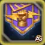
War Flag of Readiness
Readiness é excelente para Orion porque ele luta na retaguarda e normalmente é o herói mais recuado do time. A Energia extra ajuda Orion a alcançar Destruição Total mais cedo, o que significa burst antecipado, ativação antecipada do artefato de arma e mais pressão no núcleo inimigo.
Benefício para Orion e Equipe: primeira ultimate mais rápida e melhor ritmo inicial para times de burst mágico.

War Flag of Frost
Frost é uma das melhores bandeiras secundárias do Orion porque a lentidão ajuda a criar alvos marcados para Destruição Tática depois da Ascensão V. Mesmo antes disso, reduzir o nível das skills inimigas e deixar a luta mais lenta facilita que Orion mantenha o controle do ritmo.
Benefício para Orion e Equipe: melhor preparação para a sinergia com lentidão e janelas mais seguras para pressão constante de mísseis.

War Flag of Pet Strength
Pet Strength é muito boa quando Orion está com Merlin, Axel ou Khorus. Ela aumenta o poder das skills dos pets em 10%, melhorando justamente a patronagem que muitas vezes decide se Orion sobrevive ao burst ou entrega pressão mágica extra suficiente para vencer.
Benefício para Orion e Equipe: patronagens mais fortes para burst, escudo ou sobrevivência, dependendo do pet escolhido.
Melhores Times para Orion - Hero Wars: Dominion Era
Fluffy + Augustus + Orion - Time de Defesa Mágica
A sinergia entre Fluffy e Augustus cria uma defesa mágica robusta, projetada especificamente para neutralizar Sebastian. Ao utilizar a mecânica de Ovelha-Coruja, esta formação mantém o controle tático mesmo contra contra-ataques tradicionais.
Estratégia Principal e Sustentabilidade
Embora muitos times mágicos tenham dificuldade contra Isaac, esta composição contorna a alta Defesa Mágica usando Orion ou Polaris. Augustus então converte esse dano em Dano Puro, derretendo efetivamente as linhas de frente inimigas. A adição de Byrna como curadora dedicada é essencial, fornecendo o sustento necessário para manter o time vivo durante combates prolongados.
Variações Táticas
Anti-Lyria: Use Electra na variante padrão para isolar e neutralizar o impacto de Lyria.
Anti-Rufus: Incorpore Cascade para ignorar o escudo mágico de Rufus e garantir a vitória.
Controle de Grupo: O time depende fortemente de travar os oponentes enquanto Fluffy impede que Sebastian e Isaac interrompam suas habilidades.
| Orion - Melhor Time #1 | |||||
|---|---|---|---|---|---|
|
|
|
|
|
|
|
|
|
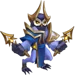 Augustus |
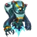 Orion |
|
|
|
Conclusão do Guia do Orion - Hero Wars: Dominion Era
Orion continua sendo um dos exemplos mais limpos de mago de ritmo em Hero Wars: Dominion Era. Quando o motor de energia, o escalonamento mágico e a proteção estão funcionando juntos, ele consegue decidir lutas antes que a composição inimiga estabilize.
Se você investir primeiro nos upgrades centrais de dano, apoiar Orion com o pet correto e escolher war flags que acelerem a primeira conjuração, ele continua sendo uma escolha muito perigosa no meta atual.
Explore novas skills com nossos heróis em destaque!
Deixe sua Opinião!
Você gostou do nosso guia do Orion para Hero Wars Web e Facebook? Há algo que não entendeu ou gostaria de sugerir mudanças? Convidamos você a participar da área de comentários do Alexandre Games Blog. Fique à vontade para expressar sua opinião, tirar dúvidas e compartilhar sugestões.
Clique no botão abaixo para começar: